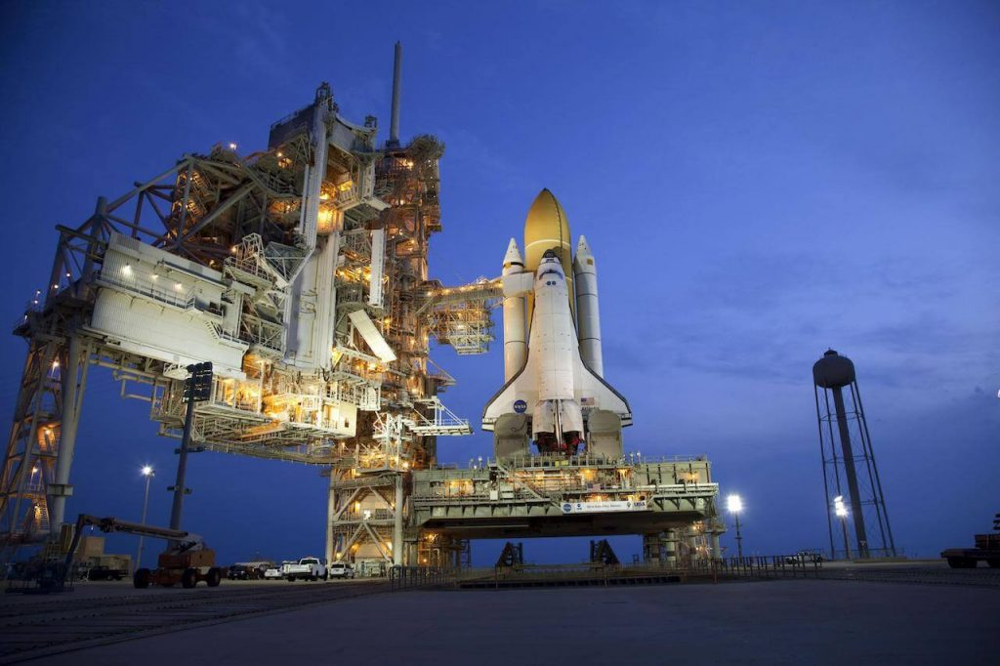
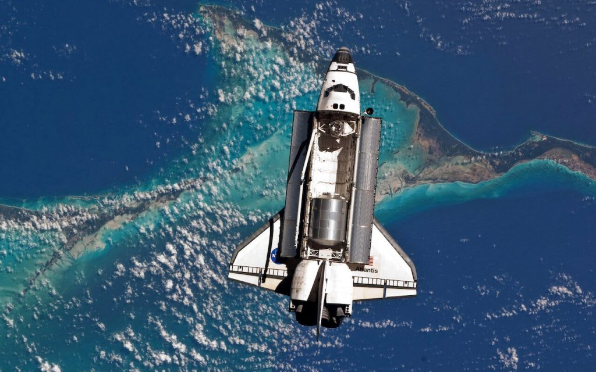
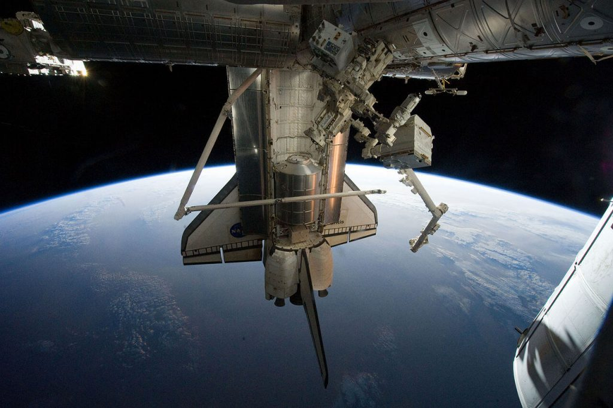
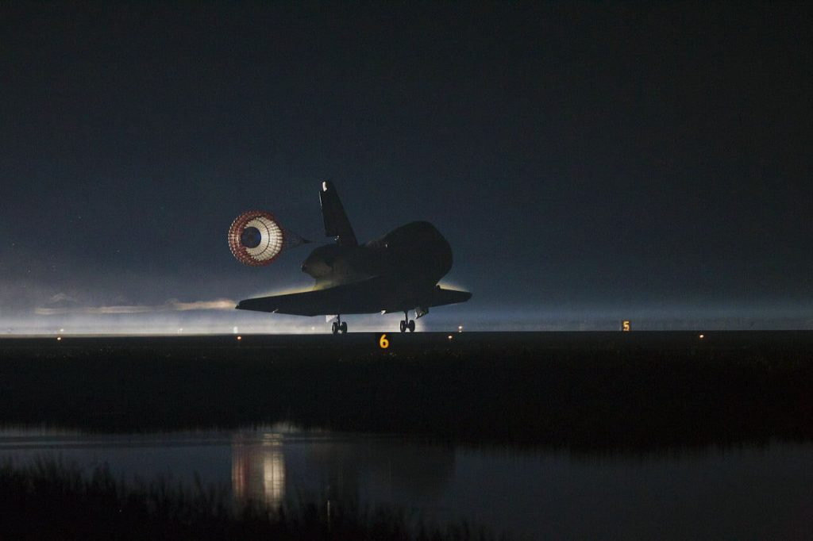

လွန်ခဲ့တဲ့ ၁၀ နှစ်တိတိ ဇူလိုင်လ အတွင်းမှာ လွန်းပျံယာဉ် အတ္တလန်တစ်စ်ကို ကနေဒီ အာကာသ စခန်းကနေ လွှတ်တင်ခဲ့ပါတယ်။ ဒါဟာ အတ္တလန်းတစ်စ်ရဲ့ နောက်ဆုံး ခရီး ဖြစ်သလို အမေရိကန် နာဆာ လွန်ပျံယာဉ် စီမံကိန်းရဲ့ နောက်ဆုံး ခရီးစဉ်လဲ ဖြစ်ပါတယ်။ အတ္တလန်တစ်စ်ဟာ ဒီခရီးမှာ အပြည်ပြည်ဆိုင်ရာ အာာကာသ စခန်းအတွက် လိုအပ်တဲ့ ကုန်ပစ္စည်းတွေ သယ်ဆောင် ပျံသန်းခဲ့တာ ဖြစ်ပါတယ်။
စုစုပေါင်း အာကာသထဲမှာ ၁၂ ရက် ၁၈ နာရီ ၂၈ မိနစ်နဲ့ ၅၀ စက္ကန့် တိတိ ကြာမြင့်ခဲ့တဲ့ ဒီခရီးကို ယာဉ်မှူး ခရစ်စတိုဖာ ဖာဂူဆန်၊ ပိုင်းလော့ ဒေါက်ဂလတ်စ် ဟာလီ နဲ့ ယာဉ်အဖွဲ့သားတွေ အဖြစ် စန္ဒရာ မက်ဂ်နပ်စ် နဲ့ ရက်စ် ဝဲလ်ဟိမ်း တို့က လိုက်ပါပျံသန်းခဲ့ ကြပါတယ်။
ဒီ ခရီးစဉ်ရဲ့ တရားဝင် ခရီးစဉ် အမှတ်ကတော့ STS-135 ဖြစ်ပါတယ်။
ဇူလိုင် ၂၁ မှာတော့ လွန်းပျံယာဉ် အတ္တလန်တစ်စ်ဟာ သူ့ရဲ့ နောက်ဆုံး ခရီးစဉ်ကို အဆုံးသတ်ပြီး ကနေဒီ အာကာသ စခန်းကို ပြန်လည် ဆင်းသက်ခဲ့ပါတယ်။ မနက် ၅ နာရီ ၅၇ မိနစ် ၂၀ စက္ကန့် အချိန် တိတိမှာ အောင်မြင်စွာ ဆင်းသက် နိုင်ခဲ့ပါတယ်။
ဒီခရီးစဉ်နဲ့အတူ အမေရိကန် အာကာသ လွန်းပျံယာဉ် စီမံကိန်းရဲ့ နှစ် ၃၀ ခရီးကို အဆုံးသတ် ပေးခဲ့ပါတယ်။

လွန်းပျံယာဉ် Atlantis ရဲ့ နောက်ဆုံး ခရီးစဉ် လွှတ်တင်ရန် အသင့်ပြင်ဆင်ထားစဉ် (Photo: NASA)လွန်းပျံယာဉ် Atlantis ရဲ့ နောက်ဆုံး ခရီးစဉ် လွှတ်တင်လိုက်စဉ် (Photo: NASA)
လွန်းပျံယာဉ် Atlantis ရဲ့ နောက်ဆုံး ခရီးစဉ်အတွင်း ကုန်ပစ္စည်းများကို အပြည်ပြည်ဆိုင်ရာ အာကာသစခန်း (ISS) ပေါ်သို့ လွှဲပြောင်းရန် အသင့်ဖြစ်နေစဉ် (Photo: NASA)
လွန်းပျံယာဉ် Atlantis ရဲ့ နောက်ဆုံး ခရီးစဉ်အတွင်း ကုန်ပစ္စည်းများကို အပြည်ပြည်ဆိုင်ရာ အာကာသစခန်း (ISS) ပေါ်သို့ လွှဲပြောင်းနေစဉ် (Photo: NASA)
လွန်းပျံယာဉ် Atlantis ရဲ့ နောက်ဆုံး ခရီးစဉ် နောက်ဆုံး ပြန်လည်ဆင်းသက်လာစဉ် (Photo: NASA)
July 8, 2021